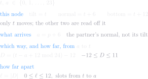

<meta charset="utf-8">
<title>Pair node — the arithmetic instead</title>
<meta name="viewport" content="width=device-width, initial-scale=1">
<link rel="stylesheet" href="pair.css">

<header>
  <h1>The arithmetic instead</h1>
  <div class="sub">one round, and the whole run — with no states, no transitions, and nothing to
    step</div>
</header>

<nav>
  <a href="index.html">Index</a>
  <a href="anatomy.html">Anatomy</a>
  <a href="own.html">Ownership</a>
  <a href="vectors.html">Vectors</a>
  <a href="math.html">Math</a>
  <a href="formulas.html">Formulas</a>
  <a href="dots.html">Separation</a>
  <a href="perpendicular.html">Perpendicular</a>
  <a href="cases.html">Cases</a>
  <a href="channels.html">Channels</a>
  <a href="cycle.html">Cycle</a>
  <a href="updates.html">Update rules</a>
  <a class="on" href="arith.html">Arithmetic instead</a>
  <a href="clock.html">Clock</a>
  <a href="geometry.html">Geometry</a>
  <a href="asym.html">Asymmetry</a>
</nav>

<!-- The maths blocks are update-closed-*.svg, set in LaTeX by mathblocks.py (pairmath.sty
     carries the rebuild command). Nothing here is loaded over the network.

     This page is deliberately NOT a restatement of updates.html. Its claim is that the
     node's behaviour can be written down instead of stepped through, so nothing here may
     use the machine's vocabulary — no state, no transition, no link, no next or prev, no
     settle. If a line needs one of those words, it belongs on the update-rules page.

     AND THE PROSE IS THE SAME RULE. A keynote line that restates the block above it in
     English is the machine's habit in another form: it makes the maths look like a summary
     of the real explanation instead of being it. Bullets here earn their place only by
     saying what the notation cannot — why a step is available, or what it would cost. -->

<main>

  <div class="grid">

    <div class="card wide">
      <p class="lead"><a href="updates.html">Update rules</a> gives this node as two state machines
        and the rule an arrival runs. None of that is needed. Two numbers in, and where it stops and
        how long it takes come out.</p>
    </div>

    <h3 class="secname">What there is</h3>

    <div class="card wide">
      <h2>Two numbers, one arrow each</h2>
      
      <div class="keynote">
        <p>a node draws three arrows and sends the middle one, so the quarter turn is already inside
          a before it is measured against anything</p>
        <p>ℓ needs no min: (t − a + 12 mod 24) − 12 lands the subtraction in −12…11 already, and ℓ
          is its size. The min form asks which of two arcs is shorter; this one never makes two</p>
      </div>
    </div>

    <h3 class="secname">How far off</h3>

    <div class="card wide">
      <h2>One number, off the quarter</h2>
      
      <div class="keynote">
        <p>both arrangements rest symmetrically about the quarter, which is why one q settles both —
          and why their two f are complements, the same fact the <a href="audit.html">audit</a>
          found by drawing them</p>
      </div>
    </div>

    <h3 class="secname">One round</h3>

    <div class="card wide">
      <h2>Where it is after one arrival</h2>
      
      <div class="keynote">
        <p>d keeps whatever value t − a has: it may be negative, and it may fall outside 0…23.
          Nothing is done to bring it back into that range, because d mod 12 would undo it —
          24 is two 12s, so d, d + 24 and d − 24 all give the same e</p>
        <p>d mod 12 is the non-negative remainder, 0…11, so e runs −6…5 and e = 0 means t already
          sits on a resting angle</p>
        <p>parallel and perpendicular differ only by the +6 inside the remainder. A tilt the same
          distance from two resting angles gives e = −6, and −6 turns up, so that case needs no
          rule of its own — 96 of the 1152 (tilt, arrival) pairs are that case</p>
        <p>the last two lines put e and ℓ side by side. They are one expression: a remainder less
          half the modulus — 12 and 6 for e, 24 and 12 for ℓ — and ℓ is that with an abs on the
          outside. The abs is the whole difference, and the direction is what it costs</p>
        <p>with t = 0, an arrival at 1 turns down and an arrival at 23 turns up. D is −1 and +1,
          which says so; ℓ is 1 for both, which cannot</p>
        <p>swept by
          <span data-src="nodes/Node1/node_test.go#TestOneRoundIsSignAndRemainder">TestOneRoundIsSignAndRemainder</span></p>
      </div>
    </div>

    <h3 class="secname">The whole run</h3>

    <div class="card wide">
      <h2>Where it stops, and when</h2>
      
      <div class="keynote">
        <p>f is the count as well as the distance — each arrival closes one slot, so there is no
          arrival number f + 1, and f = 0 is the run that takes none</p>
        <p>the walk cannot turn back, which is what makes the landing slot a multiplication rather
          than a simulation. Swept by
          <span data-src="nodes/Node1/node_test.go#TestTheWalkIsClosedForm">TestTheWalkIsClosedForm</span></p>
      </div>
    </div>

    <h3 class="secname">What this does not say</h3>

    <div class="card wide">
      <h2>It holds for a held arrival</h2>
      <div class="keynote">
        <p>a is fixed here. A live pair moves both ends, so this is one node against a direction that
          stays put — which is why the code keeps a comparison per arrival rather than this shortcut,
          and why the exchange itself is on <a href="updates.html">Update rules</a></p>
      </div>
    </div>

  </div>

</main>
